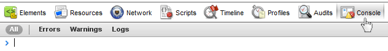
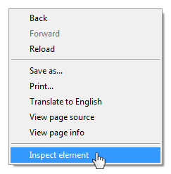

Going Beyond JavaScript Basics
You're getting to be quite the pro!
You're getting to be quite the pro!
Squash those crawly things in your code.
As the story goes, the term "software bug" got its name because a real moth flew into a computer system causing strange, unexpected behaviours to happen in a computer program.
Nowadays, bugs are mostly due to human error in one of two areas:
Luckily there's a few things to help us hunt them down quicker...
Use the built in developer tools in Chrome to debug your code. (Firefox+Firebug is similar but not exactly the same.)
[Settings Icon] > Tools > Developer Tools ( Cmd+Opt+I for Mac, Ctrl+Shift+I for Windows) Click on the Console tab.

Easiest way to remember is to right-click on any web page and select "Inspect Element". In the new panel, select the "Console" tab to see JavaScript errors or to play in the console sandbox.

You can inspect any webpage with the debugger.
Let's open up the Ladies Learning Code Events page: http://ladieslearningcode.com/events/.
How can we use the console to find out how many events are listed on this page?